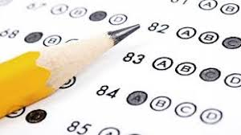

Numerous competitive exams in India are conducted for entrance into undergraduate and post graduate professional courses as well as for securing services in the government. The test formats and subjects vary according to the level of the test. Most are objective tests, followed by a personality test, and are conducted in various venues at centers across the country. Competitive exams are tough, with lakhs of aspirants appearing for a limited number of seats.
| Names of Exams | Time |
|---|---|
| Civil Services (Preliminary) Examination | May |
| Civil Services (Main) Examination | October/November |
| Engineering Services Examination | June |
| Geologist Examination | December |
| Indian Forest Service Examination | July |
| National Defence Academy & Naval Academy Examination | April and September |
| Combined Defence Services Examination | February and August |
| Special Class Railway Apprentices Examination | July |
| Indian Economic Service/Indian Statistical Service Examination | November |
| Combined Medical Services Examination | January |
| Central Police Forces (Assistant Commandants) Examination | October |
| Section Officers/Stenographers (Grade-B/Grade-I) Limited Departmental Competitive Examination | December |
Minimum age, minimum qualifying marks and degrees from recognized Indian Universities are the criteria for eligibility. Those who are awaiting results for the minimum qualification are also eligible provided they furnish proof of their eligibility in a time period notified by the councils or the institutions conducting the test. For Civil services the age limit is from 21-30 years, as on 1st August of the year of the test. Minimum qualification is graduation. For IAS and IPS only Indian nationals are eligible. For the rest of the services, PIOs from South East Asian countries are eligible. Four attempts at the CSE are permitted and curiously a graduate candidate who has failed class X and class XII is eligible. For CDS only unmarried young men and women graduates can apply, age limit is 19-25 years. For NDA only unmarried boys of 16 -19 years are eligible. Minimum qualification is 12th pass. Foreign nationals can take the course without getting a commission into the Indian army.
According to the government of India rules, 27% of the seats are reserved for OBCs (other backward classes), 15% for SC (scheduled tribes), 7.5% for ST (Scheduled tribes) and 3% for DA (differently abled or people with disability), in all tests conducted by the UPSC, UGC and in central government aided Institutions. However the class, caste and tribe must be mentioned in a list, amended from time to time, prepared by the Central government.